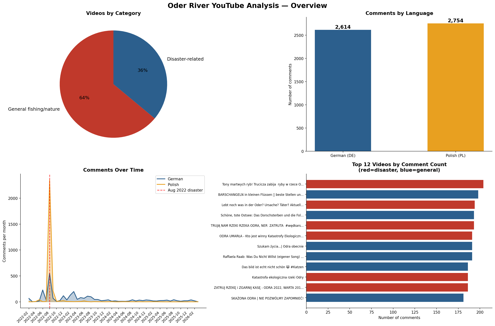

Oder River: Cultural Ecosystem Services Assessment
As part of the OderTogether project at IFB Potsdam, a cross-border resident survey will assess how the 2022 Oder River ecological disaster affected cultural ecosystem services (CES) on both sides of the German-Polish border. Before that survey launches, this analysis uses YouTube comments as a digital trace data source to explore what themes and concerns are salient in public discourse — and whether those themes differ between German and Polish communities.
YouTube comments offer a unique window into organic public reaction — unlike surveys, they capture discourse that emerges spontaneously, both on disaster-framed news videos and on everyday fishing and nature content. This dual framing is intentional: comparing comments on disaster videos vs. general river and fishing videos reveals whether ecosystem services concerns appear only when explicitly prompted, or persist in everyday recreational discourse.
YouTube API · German & Polish · Machine-translated
YouTube videos were retrieved using the YouTube Data API v3 with German and Polish search
terms related to the Oder/Odra River disaster and recreational fishing (e.g.
Fischsterben Oder, Oderkatastrophe, Oder angeln, katastrofa Odry, śnięcie ryb Odra).
Comments were collected for each video, language-detected using langdetect,
and machine-translated to English using Google Translate via deep-translator.
All topic modeling and classification was performed on the English translations.
Unique videos collected — 31 disaster-related, 55 general fishing/nature
YouTube APIRaw comments collected before filtering
YouTube APIComments analysed after filtering (≥20 chars, off-topic videos excluded)
After filteringGerman/Polish split — 2,614 DE and 2,754 PL in the raw corpus
langdetect
Fig. 1 — Dataset overview. Top left: video corpus composition (64% general fishing/nature, 36% disaster-related). Top right: near-equal German/Polish language split in raw comments. Bottom left: comment volume over time — sharp spike at the August 2022 disaster onset, rapid decay, and sustained lower-level engagement through 2025. Bottom right: top 12 videos by comment count; red = disaster-related, blue = general.
The temporal pattern is striking: comment volume spikes sharply in August–September 2022 and then drops steeply, with both German and Polish communities responding simultaneously. This confirms the disaster was a shared cross-border public event rather than a nationally siloed news story. The sustained tail of comments through 2023–2025 on general fishing/nature videos suggests ongoing ecosystem services discourse well beyond the initial crisis period.
Videos were classified as disaster-related or general fishing/nature based on title keywords (e.g. Katastrophe, Fischsterben, zatrut, katastrofa). Off-topic videos (DSDS talent show, Everest documentary, Jan Heweliusz shipwreck) were excluded before analysis. General fishing and nature videos were retained rather than discarded — the contrast between disaster and general video discourse is itself analytically informative for survey design.
Comment analysis never occurs in a vacuum — what themes emerge in comments is partly a function of what videos people were watching and reacting to. This is both a limitation and an analytically meaningful signal in its own right.
The top disaster videos in the German corpus tend toward explanatory and investigative framing: "Lebt noch was in der Oder? Ursache? Täter? Aktuell…" (Is anything still alive in the Oder? Causes? Perpetrators?) and "Schöne, tote Ostsee: Das Dorschsterben und die Folgen…" (Beautiful, dead Baltic Sea: The cod die-off and its consequences). The top Polish disaster videos are more politically charged and accusatory: "Tony martwych ryb! Trucizna zabija ryby w rzece O…" (Tonnes of dead fish! Poison kills fish in the river), "ODRA UMARŁA — Kto jest winny Katastrofy Ekologiczn…" (THE ODER IS DEAD — Who is guilty of the ecological catastrophe), and "TRUJĄ NAM RZEKI! RZEKA ODRA, NER ZATRUTA #wędkars…" (THEY ARE POISONING OUR RIVERS! The Oder, Ner poisoned).
This framing difference is itself a finding: Polish YouTube discourse about the disaster is structured around guilt, accusation, and political responsibility, while German discourse mixes investigative journalism with broader environmental concern. The elevated Polish blame and call-for-action scores in the zero-shot results are partly a product of this video corpus composition — but that composition reflects how each community actually processed and shared information about the event, making it culturally informative rather than merely a confound.
The general fishing/nature videos introduce a different kind of context-dependence. German general videos are predominantly lure fishing and technique tutorials ("BARSCHANGELN in kleinen Flüssen — beste Stellen…"), while Polish general videos include more documentary-style river content ("Szukam życia… | Odra obecnie" — Searching for life… | The Oder today). Comments on the Polish "general" videos therefore still carry substantial disaster awareness, which is consistent with the higher Polish scores on disaster-related constructs even outside explicitly disaster-framed content.
The practical implication for survey design: the asymmetry in how German and Polish communities framed the disaster on YouTube — blame-focused vs. explanation-focused — may warrant country-specific question ordering or framing, rather than a single translated instrument applied identically in both countries.
Unsupervised topic modeling using BERTopic 0.17 with
paraphrase-multilingual-MiniLM-L12-v2 sentence embeddings,
UMAP dimensionality reduction, and KMeans clustering (k=25).
Topic keywords extracted via c-TF-IDF. Representative comments
selected per topic for qualitative interpretation.
Each comment classified against 10 theory-driven labels using
facebook/bart-large-mnli with multi-label inference
(transformers pipeline). Labels map directly to
survey constructs: blame, emotional grief, recreational impact,
government failure, cross-border tension, recovery hope, health
concerns, economic loss, institutional distrust, call for action.
German and Polish comments translated to English using Google
Translate via deep-translator. Translation quality is
generally good for standard German and Polish but may degrade for
colloquialisms, slang, and very short comments. All analysis
performed on translated text.
Comments shorter than 20 characters excluded (emoji-only, single words). Off-topic videos excluded by title keyword matching. 4,329 comments retained from an original 5,368. No deduplication — reply threads retained to capture conversational context.
A hand-picked selection of comments that best illustrate the key themes across German and Polish communities. These are verbatim translated comments — the raw signal behind the topic model and zero-shot scores above.
"Honestly, I've shed a tear now! I'm not an angler, but I go to the Oder maybe thirty times a year to cycle or hike, in every season. When the disaster became known, I almost lost my legs. It was as if I had lost a piece of my life through stupidity and greed."
"Gentlemen, I have been wandering for 40 years and all I can do is cry. My beloved river that gave me so much joy has died. The rebirth of fauna and flora will last 30 years — and then I will be underground. A terrible disaster, I want to cry."
"The law should look like this: company xyz poisoned the river and there is evidence of it. All company funds and operations are automatically blocked. All assets and property of the company are taken over for the purpose of saving and restoring the river. And the owner can look for a new job."
"We had something similar a few years ago with extinguishing water in the river — everything was dead, damage amounting to millions. The court verdict was really a bad joke. The problem is the city/county would rather support the industrial sector than punish it in the event of an environmental disaster."
"I am a fisherman, I fish mainly on the Oder. We pay for stocking and maintaining the water — where is the PZW? All our money that was collected by the association was wasted. Where is the application for compensation for the associations that stock the Odra?"
"When will people realize that it's not just anglers? This is about our basic safety. This contamination is not only the water in the river — it is also the land, groundwater, plants, animals, crops, the entire environment. And at the end of this chain: WE."
"Why was an international commission to investigate this disaster not established? Samples could be tested in independent laboratories outside Poland, because I don't trust them here."
"Hello, I have been living in England for 5 years. Seeing what happened to the water where I grew up — I introduced fishing to my son and my wife, I lived in Wrocław — the pain and anger is unimaginable. I hope that the fauna will be revived."
"West Pomeranian Voivodeship: Osinów Dolny — Stara Rudnica. There are signs of life — the asp is pounding on the surface, the small ones along the banks are not too bad. So we don't lose hope."
"The Germans want to appoint a foreign commission to investigate the cause. If it turns out that it's our Polish doing, then we're so fucked up that our government won't recover."
"We anglers are left out of any discussion — and we are the 24/7 observers of our waters. We care very much about the cleanliness of lakes and rivers, and therefore the condition of the entire ecosystem. The problem is that they have reduced us to the level of a piggy bank."
"Fortunately, not all the fish died in the Oder. On the Wrocław–Lubiąż section, only a few fish died. Every now and then I stand over this section and I can see that the fish are there, feeding, and I can see the floats. Perhaps all is not lost."
Search and filter all 4,329 translated comments. Results update as you type.
Mean classification scores per group (0–1 scale, independent per label). Green ≥ 0.45 Yellow ≥ 0.30
| Group | N | Economic Loss | Call for Action | Blame | Govt Failure | Distrust | Emotional Grief | Recovery Hope | Fishing Impact | Health/Safety | Cross-border Tension |
|---|---|---|---|---|---|---|---|---|---|---|---|
| 🇩🇪 DE — Disaster videos | 678 | 0.328 | 0.441 | 0.268 | 0.153 | 0.190 | 0.217 | 0.252 | 0.330 | 0.192 | 0.057 |
| 🇩🇪 DE — General videos | 1,055 | 0.314 | 0.367 | 0.188 | 0.118 | 0.162 | 0.155 | 0.221 | 0.530 | 0.147 | 0.043 |
| 🇵🇱 PL — Disaster videos | 1,548 | 0.429 | 0.622 | 0.526 | 0.344 | 0.403 | 0.285 | 0.102 | 0.199 | 0.296 | 0.074 |
| 🇵🇱 PL — General videos | 1,048 | 0.359 | 0.539 | 0.368 | 0.249 | 0.307 | 0.264 | 0.162 | 0.276 | 0.233 | 0.064 |
| 🇩🇪 DE — All | 1,733 | 0.319 | 0.396 | 0.219 | 0.132 | 0.173 | 0.179 | 0.233 | 0.452 | 0.165 | 0.048 |
| 🇵🇱 PL — All | 2,596 | 0.400 | 0.589 | 0.462 | 0.306 | 0.364 | 0.277 | 0.126 | 0.230 | 0.271 | 0.070 |
| All comments | 4,329 | 0.368 | 0.512 | 0.365 | 0.236 | 0.288 | 0.238 | 0.169 | 0.319 | 0.228 | 0.061 |
24 topics discovered from 4,329 comments. Topics sorted by survey relevance, then size. DE%/PL% shows language composition; Disaster% shows share from disaster-framed videos.
| # | N | Theme | Top Keywords | DE% / PL% | Disaster% | Example Comment |
|---|---|---|---|---|---|---|
| 10 | 366 | Government blame & accountability | country, government, people, money, happened, responsible | 22% / 78% | 70% | "One thing is who is directly responsible for it. The second is the reaction of the services and the government — this includes resignation and charges, but I do not believe that they will be held accountable." |
| 12 | 302 | Dead fish & ecological disaster | fish, dead, dead fish, water, algae, river, oder, odra | 25% / 75% | 60% | "As a resident of the Bug River — the fish that appeared after being poisoned are simply the result of migration from the upper section. The loss of fish stock is huge." |
| 23 | 302 | Recreational fishing impact | fish, fishing, fishermen, catch, eat, tons, anglers, caught | 47% / 53% | 46% | "First the fish, then us." |
| 11 | 277 | Sewage & industrial pollution | water, river, sewage, treatment, plant, rivers, sewage treatment | 23% / 77% | 61% | "It is common practice in almost all sewage treatment plants in Germany that during heavy rain, wastewater that the plant can no longer handle is discharged into the river." |
| 13 | 268 | River identity (Oder/Odra) | river, oder, odra, rivers, odra river, canal, people | 19% / 81% | 55% | "Respect for nature is the primary essence... if we round up the 742 km of the Odra River flowing through our country and calculate on average that about 400 illegal connections to this river are detected per 50 km, we have on average 6,000 illegal discharges into the Oder along its entire length." |
| 6 | 245 | German-Polish cross-border tension | poland, polish, german, berlin, germany, government, poles, germans | 25% / 76% | 63% | "This is Poland! Sad :(" |
| 5 | 185 | Criminal penalties & perpetrators | penalty, death, culprits, prosecutor, responsible, prison, guilty | 4% / 96% | 80% | "If they do not find the culprits for this disaster and subsequent poisonings in the era of technology and monitoring, it will mean that certain services/government do not want to find the culprits." |
| 15 | 183 | Emotional grief & tragedy | god, jesus, sad, tragedy, makes want, heart, want | 30% / 70% | 59% | "It makes you want to cry when you see what is happening. Tragedy. No words." |
| 9 | 167 | Environmental activism | man, ecologists, nature, people, planet, green, world, destroy | 26% / 74% | 64% | "Man is the biggest pest on the planet." |
| 22 | 119 | Polish Waters contamination | polish, polish waters, waters, water, poland, rivers, state, river | 9% / 91% | 66% | "Doesn't Polish Waters belong to the TAHAL company? A few years ago, this company was very involved in the area Polish Waters." |
| 0 | 115 | Scientific analysis (mercury, oxygen) | mercury, water, higher, afraid, germans, oxygen, samples, salinity | 12% / 88% | 70% | "Water poisoned by mercury." |
| 4 | 111 | Poisoning & chemical contamination | poisoning, poisoned, poison, chernobyl, chemical, substance, waste | 14% / 87% | 63% | "Someone really wants not to suffer the consequences. Why are these offices there when ordinary people do better work?" |
| 24 | 87 | Fines & legal consequences | company, river, fine, penalty, pln, fines, million, prison | 3% / 97% | 71% | "Very nice company! :)" [sarcastic] |
| 7 | 61 | PiS & environmental protection failure | measles, state, protection, pis, environmental protection, ecological | 0% / 100% | 59% | "The PiS fat cats sitting on the boards of these institutions tried to sweep everything under the carpet, until the Germans officially asked about the reasons for the poisoning of the river." |
| 20 | 9 | Opole province (upstream origin) | opole province, province, attack, opole, environment, lives | 0% / 100% | 100% | "I'm from the Opole province, this is an attack on our lives and environment." |
| # | N | Theme | Top Keywords | DE% / PL% | Disaster% | Example Comment |
|---|---|---|---|---|---|---|
| 2 | 134 | Baltic Sea fisheries decline | sea, cod, baltic sea, baltic, fishing, years, fish, fishermen | 84% / 16% | 25% | "My grandfather has been dead for a long time now and I am grateful that he did not have to see his beloved Baltic Sea being destroyed." |
| 1 | 207 | News reactions & general comments | like, comment, thanks, plan, report, thank, don, news | 50% / 50% | 44% | "Thanks for this factual and topic-focused report, thanks to which I was able to learn some new things. Despite all the terrifying news, let's not lose hope that better times will come for our beloved Odra." |
The primary purpose of this analysis is to inform the OderTogether resident survey. The table below maps the comment analysis findings to specific survey design recommendations.
| Survey Construct | Evidence from Comments | DE vs PL Difference | Suggested Survey Approach |
|---|---|---|---|
| Blame & accountability | Topics 10, 5, 24; ZS blame DE=0.27 vs PL=0.53 | Strong — PL ~2× higher | Items on perceived responsibility (industry, government, both countries). Consider country-specific framing — Polish respondents may be more primed for accountability discourse. |
| Recreational fishing loss | Topics 23, 8; ZS fishing impact DE=0.45 vs PL=0.23 | Strong — DE ~2× higher | Items on changes in fishing frequency, willingness to return, species-specific loss. German anglers express this organically — items should not require disaster prompting. |
| Place attachment / river identity | Topic 13 (oder/odra/rivers); ZS grief elevated cross-nationally | Moderate — PL slightly higher | Validated place attachment scale already planned. Ensure items capture river-specific identity. Consider items explicitly naming Oder/Odra. |
| Emotional distress & grief | Topic 15 (tragedy, heart, god); ZS grief DE=0.18 vs PL=0.28 | Moderate — PL higher | Include psychological/emotional impact items. Consider wellbeing battery. Disaster context elevates both — buffer sections between river use and disaster items important. |
| Distrust of institutions | Topic 7 (PiS, environmental protection); ZS distrust DE=0.17 vs PL=0.36 | Strong — PL ~2× higher | Items on trust in German/Polish environmental authorities and cross-border cooperation. May need separate items for national vs. cross-border institutional trust. |
| Economic loss | Topics 24, 5; ZS economic loss DE=0.32 vs PL=0.40 | Moderate | Items on perceived economic impacts (fishing days lost, local business, tourism, property values). Legal compensation discourse is Polish-specific. |
| Ecological recovery perception | ZS recovery hope DE=0.23 vs PL=0.13 | Moderate — DE more hopeful | Items on perceived recovery status, timeline expectations, future use intentions. German commenters appear more optimistic — worth testing whether this holds in survey data. |
| Cross-border tension | Topic 6 (poland/german/berlin); ZS tension low overall (0.05–0.07) | Low in organic discourse | Low salience in unprompted comments but may emerge more strongly when explicitly asked. Include items on cross-border cooperation attitudes and perceptions of the other country's response. |
facebook/bart-large-mnli was trained primarily on English text. Multi-label scores are independent (do not sum to 1) and represent the model's confidence that each label applies, not a probability distribution. Scores should be interpreted comparatively rather than as absolute measures.
Oder River: Cultural Ecosystem Services Assessment

Mountain Biking: Preferences & Behavior

Wolf Project: Longitudinal survey trends

Fishermen Feedback: Sentiment + Locations
I'm always open to discussing research opportunities, collaborations, or applications of data science to natural resource management.